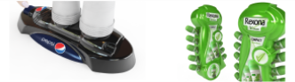
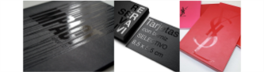
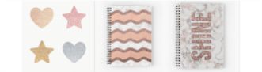
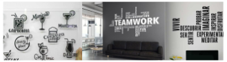

Así imprimimos
Somos especialistas en la impresión de toda clase de piezas gráficas y nos hemos enfocado en ofrecer soluciones de impresión sobre cualquier superficie. De este modo, logramos imprimir sobre todo tipo de materiales; plásticos, metales, maderas, vidrios, cerámicos y papeles, sin importar si son rígidos, blandos, flexibles o elásticos.
Técnicas de impresión
La impresión en serigrafía o también llamada Screen, permite la impresión sobre cualquier material y en espesores hasta de 12 cms. Tiene una calidad de imagen ultra nítida.
Podemos imprimir directamente sobre materiales como: Poliestireno , Polipropileno, PET, Vacuplast, Cartonplast, Spectar, Clear, MDF, Vidrio, Metal, Madera, Corcho, Acrílico, Vipack, Telas, Paños, Yute, Vinilos, etc.
También llamada Litografía. La impresión offset es una técnica que consiste en aplicar una tinta sobre una plancha metálica la cual, mediante rodillos y cilindros, transfieren la imagen al papel.
Se puede emplear esta técnica sobre papeles, cartulinas y cartones, de acabado esmaltado o mate; en todos los gramajes. El resultado de imagen es de alta calidad y se recomienda esta técnica para la impresión de grandes cantidades.
La impresión digital es un proceso que consiste en plasmar un archivo digital al material por dos medios (principalmente): inkjet (inyección por goteo de tinta) y tóner (láser en seco).
Estas técnicas permiten la impresión sobre lonas, banners, vinilos adhesivos o papeles para decoración de paredes, vitrinas, vehículos, pisos, señalética de interior y exterior, entre muchos otros.
Serigrafía
También llamada Litografía. La impresión offset es una técnica que consiste en aplicar una tinta sobre una plancha metálica la cual, mediante rodillos y cilindros, transfieren la imagen al papel.
Se puede emplear esta técnica sobre papeles, cartulinas y cartones, de acabado esmaltado o mate; en todos los gramajes. El resultado de imagen es de alta calidad y se recomienda esta técnica para la impresión de grandes cantidades.
Offset
También llamada Litografía. La impresión offset es una técnica que consiste en aplicar una tinta sobre una plancha metálica la cual, mediante rodillos y cilindros, transfieren la imagen al papel.
Se puede emplear esta técnica sobre papeles, cartulinas y cartones, de acabado esmaltado o mate; en todos los gramajes. El resultado de imagen es de alta calidad y se recomienda esta técnica para la impresión de grandes cantidades.
Digital
La impresión digital es un proceso que consiste en plasmar un archivo digital al material por dos medios (principalmente): inkjet (inyección por goteo de tinta) y tóner (láser en seco).
Estas técnicas permiten la impresión sobre lonas, banners, vinilos adhesivos o papeles para decoración de paredes, vitrinas, vehículos, pisos, señalética de interior y exterior, entre muchos otros.
Otros procesos
Termoformado
Logramos formas en 3D y su debida impresión para realizar campañas impactantes, sobre impresión con tintas UV thermoformable, en PS, PP, PET.
Raspe y Gane
O scratch-off. Se aplica sobre tarjetas, cartones o cualquier pieza que requiera una banda de raspe y gane. Se aplica con tintas y materiales que permiten ser raspados.
Brillo UV
Es un film de PVC flexible transparente con brillo o mate. Especialmente diseñado para dar un acabado elegante a sus piezas.
Escarchado
Barniz perlado y escarchado que permite realzar los colores y dar un efecto de luminosidad para las piezas que lo requieran.
Ruteado y Corte Láser
Damos corte desde siluetas sencillas hasta formas complejas, según lo requieran sus piezas publicitarias.
Corte en Plotter
Corte de alta precisión que forma siluetas adhesivas. Pueden ser pequeños o de gran formato.
Catálogo de Productos
Algunas muestras de lo que sabemos imprimir en Kronos:
*Da clic en las esquinas del libro para cambiar de página
*Da en el botón de abajo para descargar nuestro catálogo